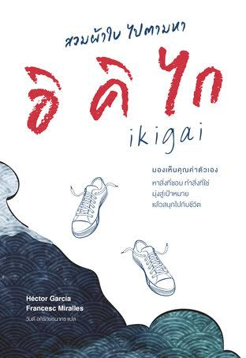

การค้นหาตัวเอง สิ่งที่ชอบ
รีวิวหนังสือ สวมผ้าใบ ไปตามหาอิคิไก (Ikigai for Teens)
ถ้าคุณเคยรู้สึกว่าไม่รู้ว่าทุกวันนี้กำลังทำสิ่งต่าง ๆ ไปเพื่ออะไร หนังสือเล่มนี้อาจช่วยคุณได้ "สวมผ้าใบ ไปตามหาอิคิไก" (Ikigai for Teens) ชวนวัยรุ่นออกเดินทางค้นหา "อิคิไก" แนวคิดของญี่ปุ่นที่หมายถึงเหตุผลที่ทำให้เราอยากตื่นขึ้นมาใช้ชีวิตทุกเช้า
ทำไมถึงควรอ่าน ข้อมูลหนังสือไปตามหา
อิคิไก

ทำไมถึงควรอ่านหนังสือเล่มนี้?
หนังสือเกี่ยวกับเรื่องอะไร?
สวมผ้าใบ ไปตามหาอิคิไก เป็นหนังสือจิตวิทยาและพัฒนาตัวเอง ที่อธิบายแนวคิด "อิคิไก" ของญี่ปุ่น ซึ่งหมายถึงเหตุผลที่ทำให้เราอยากตื่นขึ้นมาใช้ชีวิตในแต่ละวัน หนังสือชวนให้ผู้อ่านออกสำรวจว่าตัวเองชอบอะไร ถนัดอะไร และอยากไปทางไหน เขียนโดย Héctor García และ Francesc Miralles
หนังสือเล่มนี้เหมาะกับใคร?
เหมาะกับวัยรุ่น นักเรียน นักศึกษา และคนที่ยังไม่แน่ใจว่าอยากทำอะไรกับชีวิต เพราะชื่อเดิมของหนังสือคือ Ikigai for Teens ซึ่งเขียนให้คนวัยรุ่นอ่าน คนวัยอื่นที่กำลังมองหาแรงบันดาลใจก็น่าจะอ่านได้เช่นกัน
ต้องมีพื้นฐานหรือไม่?
ไม่ต้องมีพื้นฐานมาก่อน ไม่จำเป็นต้องรู้จักอิคิไก หรือรู้ภาษาญี่ปุ่น เพราะหนังสือค่อย ๆ พาผู้อ่านรู้จักแนวคิดนี้ ด้วยการเล่าเรื่องให้เข้าใจง่าย และชวนลองหาคำตอบของตัวเองทีละขั้น
ได้ประโยชน์อะไรจากการอ่าน?
ช่วยให้มองเห็นคุณค่าของตัวเองและมีแรงบันดาลใจในการเริ่มต้นแต่ละวัน
- ค้นหาสิ่งที่ชอบและสิ่งที่ถนัด
- ตั้งเป้าหมายและมุ่งไปสู่เป้าหมายนั้น
- เข้าใจว่าถ้ายังไม่รู้ว่าอยากทำอะไร ก็ไม่เป็นไร ค่อย ๆ หาคำตอบไปได้
- สนุกกับชีวิตประจำวันมากขึ้น
อิคิไกคืออะไร
อิคิไก (生き甲斐) เป็นคำภาษาญี่ปุ่น แปลว่า "คุณค่าหรือความหมายของการมีชีวิตอยู่" โดยทั่วไปมักอธิบายว่าเกิดจากการมาบรรจบกันของ 4 สิ่งนี้
สิ่งที่รัก
สิ่งที่ทำแล้วมีความสุข
สิ่งที่ถนัด
สิ่งที่เราทำได้ดี
สิ่งที่โลกต้องการ
สิ่งที่เป็นประโยชน์ต่อผู้อื่น
สิ่งที่สร้างรายได้
สิ่งที่ทำให้เลี้ยงชีพได้
ข้อมูลหนังสือ
หนังสือเล่มนี้เป็นฉบับแปลภาษาไทยของ Ikigai for Teens เขียนโดย Héctor García และ Francesc Miralles ผู้เขียนคู่เดียวกับหนังสือ Ikigai ที่ได้รับความนิยมและถูกแปลเป็นหลายภาษา
| ชื่อหนังสือ | สวมผ้าใบ ไปตามหาอิคิไก |
|---|---|
| ชื่อต้นฉบับ | Ikigai for Teens |
| ผู้เขียน | Héctor García และ Francesc Miralles |
| สำนักพิมพ์ (ฉบับไทย) | เนชั่นบุ๊คส์ (Nation Books) |
| ISBN | 978-616-587-048-1 |
| หมวดหมู่ | จิตวิทยา / พัฒนาตัวเอง |
| ผู้แปล | [วันดี อภิรักษ์ธนากร] |
| จำนวนหน้า / ราคา | [208หน้า/250บาท] |
รีวิวจากผู้เขียนเว็บ
ความเห็นของเรา
[ถ้าคุณมีอิคิไกแล้วก็ยินดีด้วย แต่ถ้ายังก็ไม่เป็นไร ความสุขของเราไม่ต้องเอาไปเปรียบเทียบกับใครอื่น เดินหน้าไปด้วยจังหวะชีวิตของตัวเอง สวมผ้าใบออกไปตามหาอิคิไกกัน!]
คะแนน: [5/5]
ข้อดี
- อ่านง่าย เหมาะกับทุกคน ยังไม่สายที่เราจะพยายามค้นหาตัวเอง
- ช่วยให้เริ่มคิดเรื่องเป้าหมายของตัวเอง
- ไม่ต้องมีพื้นฐานมาก่อน
ข้อควรรู้
- เป็นหนังสือแนวแนะแนวทาง ไม่ใช่คู่มือที่มีคำตอบสำเร็จรูป
- ต้องลงมือลองทำด้วยตัวเอง ถึงจะเห็นผล